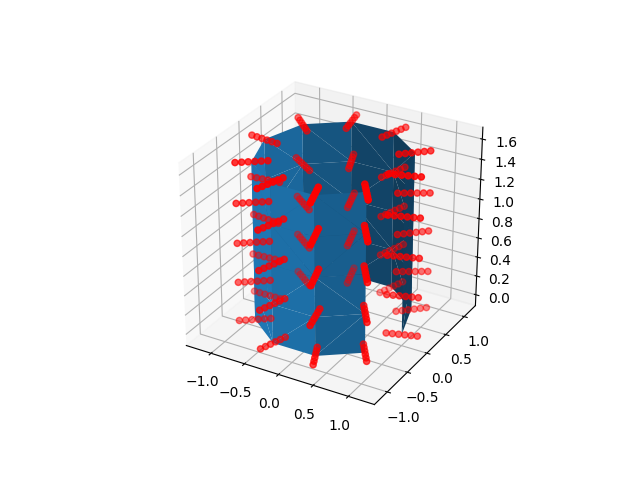
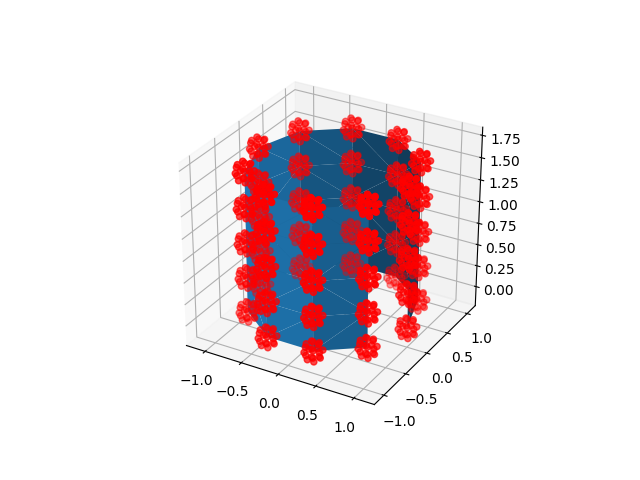

Note
Click here to download the full example code or to run this example in your browser via Binder
8.2.5. Technical point: Illustration of the volume to surface sampling schemes¶
In nilearn, nilearn.surface.vol_to_surf allows us to measure values of
a 3d volume at the nodes of a cortical mesh, transforming it into surface data.
This data can then be plotted with nilearn.plotting.plot_surf_stat_map
for example.
This script shows, on a toy example, where samples are drawn around each mesh vertex. Image values are interpolated at each sample location, then these samples are averaged to produce a value for the vertex.
Two strategies are available to choose sample locations: they can be spread along the normal to the mesh, or inside a ball around the vertex. Don’t worry too much about choosing one or the other: they take a similar amount of time and give almost identical results for most images.
import numpy as np
import matplotlib
from matplotlib import pyplot as plt
from mpl_toolkits.mplot3d import Axes3D
from nilearn.surface import surface
from nilearn.plotting import show
8.2.5.1. Build a mesh (of a cylinder)¶
8.2.5.2. Get the locations from which vol_to_surf would draw its samples¶
line_sample_points = surface._line_sample_locations(
mesh, np.eye(4), segment_half_width=.2, n_points=6)
ball_sample_points = surface._ball_sample_locations(
mesh, np.eye(4), ball_radius=.15, n_points=20)
8.2.5.3. Plot the mesh and the sample locations¶
for sample_points in [line_sample_points, ball_sample_points]:
fig = plt.figure()
ax = plt.subplot(projection='3d')
ax.plot_trisurf(x, y, z, triangles=triangulation.triangles)
ax.scatter(*sample_points.T, color='r')
show()
- 
- 
Total running time of the script: ( 0 minutes 0.187 seconds)